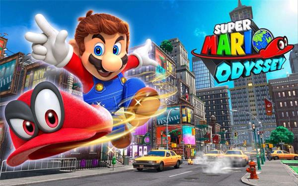

A História do Mario Odyssey
imagem do jogo super Mario Odyssey
Super Mario Odyssey[b] é um jogo de plataforma de 2017 desenvolvido e publicado pela Nintendo para o console de videogame Nintendo Switch. Uma entrada na série Super Mario, segue Mario e seu novo aliado Cappy - um chapéu consciente que permite a Mario controlar outros personagens e objetos - enquanto eles viajam por vários reinos para salvar a Princesa Peach dos planos de seu inimigo Bowser de casamento forçado. Em contraste com a jogabilidade linear de entradas anteriores, o jogo retorna à jogabilidade de plataforma 3D em aberto, destaque em Super Mario 64 e Super Mario Sunshine. Odyssey foi lançado em 27 de outubro de 2017.
Em Odyssey, Mario explora vários reinos e coleta Luas de Energia escondidas dentro deles, usadas como fonte de combustível para alimentar um dirigível conhecido como Odisseia para viajar para novos locais. A principal função de Cappy é a habilidade de "capturar", permitindo que Mario possua inimigos e outros objetos, ajudando-o a resolver quebra-cabeças e progredir no jogo. Depois de completar o modo história principal, outros reinos pós-jogo são desbloqueáveis e um minigame adicional, "Luigi's Balloon World", é jogável. O jogo suporta multiplayer e realidade virtual com um kit de realidade virtual nintendo labo.
O jogo foi desenvolvido pela divisão de Planejamento & Desenvolvimento de Entretenimento da Nintendo e começou a ser desenvolvido logo após o lançamento de Super Mario 3D World em 2013. Várias ideias foram sugeridas durante o desenvolvimento, e para incorporá-las toda a equipe decidiu empregar um estilo sandbox de jogabilidade. Ao contrário de episódios anteriores, como New Super Mario Bros., e Super Mario 3D Land, que eram voltados para um público casual, a equipe projetou Super Mario Odyssey para atrair os principais fãs da série. O jogo também conta com duas músicas temáticas vocais, "Jump Up, Super Star!", e "Break Free (Lead The Way)!", uma primeira para a série.
Super Mario Odyssey foi citado como um dos melhores jogos da série Mario, com elogios particulares à sua inventividade e originalidade. O jogo ganhou vários prêmios e vendeu quase 23 milhões de cópias até dezembro de 2021, tornando-se um dos jogos switch mais vendidos e o jogo mais vendido da série.
Além de seus movimentos existentes, como salto triplo e salto na parede, Mario pode jogar seu boné, a forma física de um espírito de chapéu chamado Cappy, em várias direções para atacar inimigos e usar como uma plataforma temporária. [6][9] Quando a tampa é jogada em certos objetos, inimigos ou personagens não jogáveis, Mario é capaz de tomar posse deles, referido como "captura", permitindo que ele use habilidades únicas. Por exemplo, Mario pode capturar um Bullet Bill para voar através de grandes lacunas, um Tiranossauro para atropelar coisas, um parafuso de eletricidade chamado um Pylon de Faísca para escalar fios elétricos, e um tanque chamado Sherm para disparar contra inimigos e quebrar blocos para passagem. [
O principal centro do jogo é o Comet Observatory, uma nave espacial que contém seis cúpulas que fornecem acesso à maioria das 42 galáxias disponíveis do jogo, com cada cúpula, exceto uma segurando cinco. [6] Cinco cúpulas terminam com um nível de chefe no qual o objetivo é derrotar Bowser ou Bowser Jr. e ganhar uma Estrela de Poder especial, conhecida como Uma Grande Estrela, que dá ao jogador acesso à próxima cúpula. [6] O jogador só tem acesso a uma galáxia quando começa o jogo; à medida que mais Estrelas do Poder são coletadas, mais galáxias e estrelas se tornam disponíveis. O jogador é premiado com a capacidade de jogar como Luigi depois de colecionar 120 Power Stars como Mario. Uma vez que 120 Power Stars são coletados com ambos os personagens, o jogador é recompensado com mais um desafio que, após a conclusão, premia o jogador com as duas últimas estrelas, e duas fotos comemorativas dos personagens que podem ser enviados para o Wii Message Board. [10]